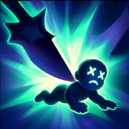

SKILL 01 • ULTIMATE
Rising Tornado
Drayne spins his sword, striking enemies in front of him three times.
When activated, Drayne grows in size and increases both his Physical Attack and the range of his skills for nine seconds. This allows his attacks to threaten enemies who might otherwise remain outside his normal reach.
Damage scales with Physical Attack, making this stat important for his offensive pressure.
The Ultimate also activates Drayne's Weapon Artifact, providing a team-wide Crushing bonus.
Heroes such as Guus and Jet can contribute to critical-oriented strategies, while Dante and Corvus can help weaken enemies through their own stat-reduction and defensive interactions.
KEY MECHANIC: Three physical strikes, nine seconds of increased Physical Attack and skill range, plus team-wide Crushing from the Weapon Artifact.
Every three basic attacks, Drayne unleashes a strike that damages enemies around him.
Importantly, Shatter Strike itself counts as a basic attack.
This surrounding damage allows Drayne to threaten enemies who move close to him instead of attacking only the opponent directly in front.
The ability's damage scales with Physical Attack, so offensive investment improves both Rising Tornado and Shatter Strike.
KEYWORD: AREA PRESSURE. Every three basic attacks, Drayne damages surrounding enemies, and Shatter Strike counts as a basic attack.
For seven seconds, Drayne increases Crushing for himself and the allies positioned behind him, while attacking the nearest enemies in front.
This ability scales with both Physical Attack and Health.
That makes Health more than a defensive stat. Increasing it improves Drayne's survivability and contributes to the effectiveness of his offensive support.
Dante and Corvus can complement this strategy by weakening enemy stats or defenses, helping the team convert its attacks into more effective damage.
IMPORTANT SCALING: Power Charge uses both Physical Attack and Health. It grants Crushing to Drayne and allies behind him for seven seconds.

SKILL 04 • SIGNATURE PASSIVE
Final Verdict
Final Verdict allows Drayne's attacks and skills to instantly kill enemies whose Health falls below his execution threshold.
Enemies killed by Drayne cannot be resurrected. This makes Final Verdict particularly dangerous against teams that rely on healing and resurrection.
However, Drayne must still successfully connect with the target. A dodged attack does not deliver the execution.
The execution threshold scales with Drayne's Health, not Physical Attack.
This is the central mechanic behind his recommended build: Health improves his survival, strengthens Power Charge and increases the effectiveness of Final Verdict.
EXECUTION MECHANIC: A successful attack can permanently eliminate enemies below Drayne's Health-based execution threshold. Dodged attacks do not execute the target, and victims cannot be resurrected.